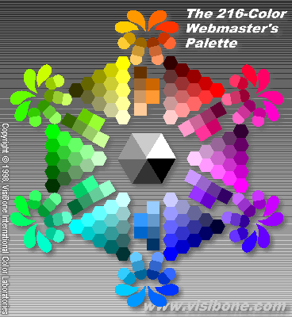

<html>
<head>
<meta name="description"
content="Color scheme picker for web designers. See all the web-safe colors on the left. Pick by clicking. See your choices on the right with hex and decimal codes and all text / background combinations. Click on the little 'X's to delete a choice.">
<meta name="keywords"
content="web safe colors,browser safe colors,color,palette,web design,graphics design,color picker,dither,hue,rgb,rgb color chart,hex,hex code,hex color,background color,color wheel,html color,html color code,html color chart">
<meta name="GENERATOR" content="Microsoft Visual WordPad 1.0">
<title>VisiBone Webmaster's Color Lab</title>
</head>

<script lang="JavaScript 1.0"><!--

// VisiBone Online Color Lab for the Webmaster's Palette
// -----------------------------------------------------
// Version 3.00
// © 2000 VisiBone
// Natural habitat:  http://www.visibone.com/colorlab/index.html
// Author:  Bob Stein, stein@visibone.com
//
// History:
// 1998.0905         visibone.com registered
// 1998.0912  V1.0   Color Lab on the air
// 1999.05    V2.0   Automatic resizing of palette
// 1999.12    V2.2   Added "X" to delete
// 2000.0210  V2.21  Added Swedish, Italian, Czech, Japanese, Russian
// 2000.0411  V2.22  Tinkering with keywords, links, etc.
// 2000.0415  V3.00  Manual resizing of palette and smaller GIFs
//                   Added Danish, Indonesian, Portuguese, Polish


var subnotice=
	'Click on another color...\<br\>\n'+              // English by Bob Stein
	'Cliquer un autre couleur...\<br\>\n'+            // French, thanks to the scintillating Carole Guevin & adjusted by Kais Khelif
	'Klicken Sie auf eine andere Farbe...\<br\>\n'+   // German, thanks to the bright and cheerful Irene Meyer
	'Haga clic en otro color...\<br\>\n'+             // Spanish, gracias a esas primas apacibles y bellas, Suia y Tati
	'Klikk p&aring; en annen farge...\<br\>\n'+       // Norwegian, thanks to Instructor Lise Taran Koepke
	'Probeer nog een andere kleur...\<br\>\n'+        // Dutch ("try out another color") more exact: "Klik op een andere kleur"  Thanks to Jaap Cost Budde
	'Klicka p&aring; en annan f&auml;rg...\<br\>\n'+  // Swedish, thanks to Urban Lundquist
	'Cliccare su un altro colore...\<br\>\n'+         // Italian, thanks to Marji Keith
	'Klikn&ecirc;te na jinou barvu...\<br\>\n'+       // Czech, thanks to Alexander Boreysha
	'Klik p&aring; en anden farve...\<br\>\n'+        // Danish, thanks to Paul Lund
	'klik pada warna lainnya...\<br\>\n'+             // Indonesian, thanks (terima kasih) to Iswardy Dolahsiman
	'Clique em outra cor...\<br>\>\n'+                // Portuguese (Brazilian), thanks to Prof. José Antonio Meira da Rocha
	'Kliknij inny kolor...\<br>\>\n'+                 // Polish, thanks to Beth Winter
	'\\<br\>\n';              // Chinese.  This crisply rendered adjusted version was kindly offered by Wali Tung.
                                                        // First Chinese translation and rendering was graciously provided by Wong Soon Teck.  
	                                                  // Japanese translation and thoughtful rendering by Miki Ofuji
	                                                  // Russian translation and screen-image thanks to Alexander Boreysha

var NHIST=8;
var historyCode=new Array(NHIST);
var historyAbbr=new Array(NHIST);
var historyFgnd=new Array(NHIST);
var historyName=new Array(NHIST);

// Note:  addressing globals such as historyCode[] may require prefix:  parent.historyCode[]

function clearhist()
{
	for (var i=0 ; i < NHIST ; i++) {
		historyCode[i]=null;
		historyAbbr[i]=null;
		historyName[i]=null;
		historyFgnd[i]=null;
	}
}

function addhist(code,abbrev,name,fgnd)
{
	for (var i=NHIST-1 ; i >= 1 ; i--) {
		historyCode[i]=historyCode[i-1];
		historyAbbr[i]=historyAbbr[i-1];
		historyName[i]=historyName[i-1];
		historyFgnd[i]=historyFgnd[i-1];
	}
	historyCode[0]=code;
	historyAbbr[0]=abbrev;
	historyName[0]=name;
	historyFgnd[0]=fgnd;
}

function delehist(idx)
{
	for (var i=idx ; i < NHIST-1 ; i++) {
		historyCode[i]=historyCode[i+1];
		historyAbbr[i]=historyAbbr[i+1];
		historyName[i]=historyName[i+1];
		historyFgnd[i]=historyFgnd[i+1];
	}
	historyCode[NHIST-1]=null;
	historyAbbr[NHIST-1]=null;
	historyName[NHIST-1]=null;
	historyFgnd[NHIST-1]=null;
}

function rollhist(idx)
{
	var c=historyCode[idx];
	var a=historyAbbr[idx];
	var n=historyName[idx];
	var f=historyFgnd[idx];
	delehist(idx);
	addhist(c,a,n,f);
}

function clearem()
{
	clearhist();
	show();
}

function roll(idx)
{
	alert('roll');
	rollhist(idx);
	show();
}

function dele(idx)
{
	delehist(idx);
	show();
}

function pick(code,abbrev,name)
{
	clearhist();
	
	var r=parseInt(code.substring(0,2),16);
	var g=parseInt(code.substring(2,4),16);
	var b=parseInt(code.substring(4,6),16);
	var fg=((2*r + 4*g + b) > (2*255 + 4*255 + 255)/2) ? '000000' : 'FFFFFF';
	addhist(code,abbrev,name,fg);
	show();
}

function show()
{
	if (historyCode[0] == null) {
		top.right.location="labright.html";
		return;
	}
	var d=top.right.document;
	d.open();
	d.bgColor='#000000';
	d.fgColor='#FFFFCC';

	var r=parseInt(historyCode[0].substring(0,2),16);
	var g=parseInt(historyCode[0].substring(2,4),16);
	var b=parseInt(historyCode[0].substring(4,6),16);
	var rs=new String(r);
	var gs=new String(g);
	var bs=new String(b);
	var k=255-Math.max(Math.max(r,g),b);
	var c=(255-k)-r;
	var m=(255-k)-g;
	var y=(255-k)-b;
	var c=Math.round((c*100)/255);
	var m=Math.round((m*100)/255);
	var y=Math.round((y*100)/255);
	var k=Math.round((k*100)/255);
	var cs=new String(c);
	var ms=new String(m);
	var ys=new String(y);
	var ks=new String(k);

	d.writeln('\<body bgcolor=#000000\>');
	d.writeln('\<table border=0 cellpadding=6 cellspacing=0 width=368\>');
		d.writeln('\<tr\>\<td colspan=',NHIST,' bgcolor=#',historyCode[0],'\>');
			d.writeln('\<table border=0 cellpadding=0 cellspacing=0 width=100%\>\<tr\>');
				d.writeln('\<td\>');
					d.writeln('');
				d.writeln('\</td\>');
				d.writeln('\<td align=center\>');
					d.writeln('\<p align=center style=\"font-family:Arial,Helvetica;font-size:70%;color:#',historyFgnd[0],'\"\>');
						d.writeln(historyCode[0].big().big().big().bold(),'\<br\>');
						d.writeln(historyAbbr[0].big(),'\<br\>');
						d.writeln(historyName[0]);
					d.writeln('\</font\>\</p\>');
				d.writeln('\</td\>');
				d.writeln('\<td\>');
					d.writeln('');
				d.writeln('\</td\>');
				d.writeln('\<td align=center\>');
					d.writeln('\<font face=\"Arial,Helvetica\" color=#',historyFgnd[0],'\>\<p align=right valign=center\>');
						d.writeln(rs.bold(),'\<br\>');
						d.writeln(gs.bold(),'\<br\>');
						d.write(bs.bold());
					d.writeln('\</p\>\</font\>');
				d.writeln('\</td\>');
				d.writeln('\<td align=center\>');
					d.writeln('\<font face=\"Arial,Helvetica\" color=#',historyFgnd[0],'\>\<p align=left valign=center\>');
						d.writeln('=R\<br\>');
						d.writeln('=G\<br\>');
						d.write('=B');
					d.writeln('\</p\>\</font\>');
				d.writeln('\</td\>');
				d.writeln('\<td\>');
					d.writeln('');
				d.writeln('\</td\>');
				d.writeln('\<td align=center\>');
					d.writeln('\<font face=\"Arial,Helvetica\" color=#',historyFgnd[0],'\>\<p align=right valign=center\>');
						d.writeln(cs.bold(),'\<br\>');
						d.writeln(ms.bold(),'\<br\>');
						d.writeln(ys.bold(),'\<br\>');
						d.write(ks.bold());
					d.writeln('\</p\>\</font\>');
				d.writeln('\</td\>'); 
				d.writeln('\<td align=center\>');
					d.writeln('\<font face=\"Arial,Helvetica\" color=#',historyFgnd[0],'\>\<p align=left valign=center\>');
						d.writeln('=C\<br\>');
						d.writeln('=M\<br\>');
						d.writeln('=Y\<br\>');
						d.write('=K');
					d.writeln('\</p\>\</font\>');
				d.writeln('\</td\>');
			d.writeln('\</tr\>\</table\>');
		d.writeln('\</td\>\</tr\>');
	d.writeln('\</table\>');
	d.writeln('\</body\>');
	top.right.creator=top.center;
	d.close();
}

function vroom(win)
{
	if (win.innerHeight != null) {
		return win.innerHeight;
	}
	if (win.document != null
	 && win.document.body != null
	 && win.document.body.clientHeight != null) {
		return win.document.body.clientHeight;
	}
	return 0;
}

var oldvroom=-1;
var needshow=false;


function load(win)
{
	checkvroom(win);
	clearem();
}

//--></script>	

  <frameset framespacing="0" border="false" frameborder="0" rows="400,*" disabled_onload="top.intermediateload()">
    <frame name="center" scrolling="no" src="labcenter.html" marginwidth="0" marginheight="0">
    <frame name="right" scrolling="AUTO" src="labright.html" marginwidth="0">

  <noframes>
  <body>
  <p><font face="Arial,Helvetica"><strong>The 216-Color Webmaster's
  Palette</strong>.&nbsp; This is the world's first look at the entire set of browser safe
  colors arranged symmetrically by hue. This is the set of colors most universally and
  consistently supported by web browsers.&nbsp; When designing a web site, it's best to
  choose font and background colors from this set.&nbsp; Also known as the web-safe palette,
  the safety palette, the universal palette, Netscape colors, dither-free colors, or the
  6x6x6 colors.</font></p>
  <table border="0" cellpadding="0" cellspacing="0">
    <tr>
      <td><font face="Arial,Helvetica"><a href="http://www.visibone.com/color/"></a></font></td>
      <td><font face="Arial,Helvetica"></font></td>
      <td><font face="Arial,Helvetica">Soon to be available in an attractive <a
      href="http://www.visibone.com/color/">poster</a>, the Webmaster's Palette</font></td>
    </tr>
  </table>
  <p><font face="Arial,Helvetica">More info:&nbsp; <a href="faq.html#top" target="_top">lab
  tour</a>,&nbsp; <a href="faq.html#why" target="_top">web colors</a>,&nbsp; <a
  href="faq.html#clut" target="_top">CLUT (Adobe swatches)</a>,&nbsp; <a
  href="vaccchue.html" target="_top">color codes</a>,&nbsp; <a
  href="http://www.visibone.com/links/" target="_top">links</a></font></p>
  <p><a href="mailto:stein@visibone.com" target="_top"><font face="Arial,Helvetica"><em>stein@visibone.com</em></font></a></p>
  <p><small><font face="Arial,Helvetica">Note: The <a
  href="http://www.visibone.com/colorlab/">color lab</a> requires frames and JavaScript to
  interactively pick colors.&nbsp; Then you can see your color picks next to each other with
  combinations of text and background colors.&nbsp; On the left is the &quot;color
  menu&quot;&nbsp; used by the color lab.&nbsp; If your browser supported frames and
  JavaScript, you'd be able to hover over the colors in this menu and see the 6-digit
  hexadecimal codes on the status line.</font></small></p>
  </body>
  </noframes>
</frameset>
</html>
